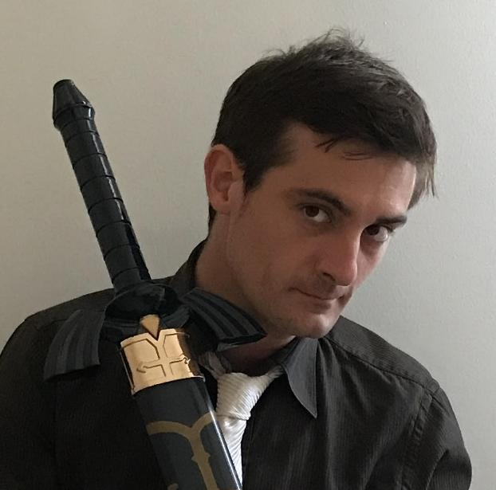

Manel
Ingeniero de aventuras en tierras olvidadas
Sobre él
Nació en Barcelona en 1985. De profesión técnica, estudió ingeniería informática y terminó en la programación de videojuegos. Usa la escritura como vía de escape en la que plasma la luz, acción y fantasía que le falta entre los números de su rutina.
Manel es parte fundamental de Fantatrías, aportando su voz única al taller con historias que exploran los límites de la imaginación. Acción, fantasía, humor y cualquier cosa que sacuda el alma.
Géneros favoritos
• Fantasía clásica
• Aventuras
En el taller desde
2020
Obra destacada
La reina de llaves (novela en proceso)
Objetivos 2025-2026
1. Terminar su novela: La reina de llaves e intentar publicarla
2. Crear un recopilatorio de sus cuentos